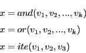
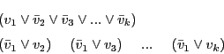
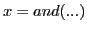
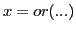
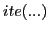
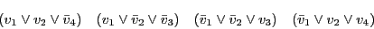
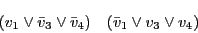

Next: Generalized Cofactor (GCF)
Up: Reference - Preprocessing
Previous: Binary Decision Diagrams (BDDs)
Contents
Pattern Matching: CNF
The current version of sbsat supports clustering only when CNF
input is given. Our clustering algorithm is influenced solely by
observing patterns in CNF formulas due to the dlx benchmarks
from CMU. Those benchmarks, before translation to CNF, consist of
numerous lines almost all of which have a form similar to one of the
following:

A pass is made through all clauses of a given CNF formula looking for
patterns similar to the following:

which in this case represents the first of the three expressions
above. Clauses equivalent to the second expression are similar (one
large clause and several binary clauses) differing only in which
literals are negated. If a set of clauses matching the form above is
found, then those clauses are replaced by a single BDD representing
the corresponding  or  expression. In the case
of the  expression a pattern of six clauses of the following
form:

is replaced by a BDD representing the third expression above. In
addition, if such a pattern is found the following two clauses may
also be removed from the original CNF formula during the clustering
operation without consequence:

Any BDD constructed in this way is marked with a special function
identifier so that the corresponding SMURF will be
smaller than otherwise.
Next: Generalized Cofactor (GCF)
Up: Reference - Preprocessing
Previous: Binary Decision Diagrams (BDDs)
Contents
Sean Weaver
2009-01-13